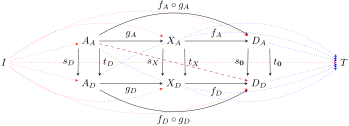
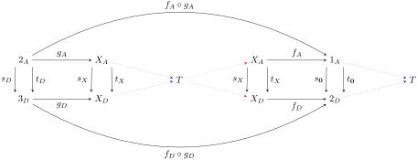

Sequence of graphs...
Solution.
Let’s start with (a), because I think the idea here is that \(X \longrightarrow \mathbf{0}\) effectively represents my old model of a map. I’ve been struggling with the concept of map \(P \xrightarrow{g} G\) from person to gender , has been so troublesome because I allowed \(g p\) to be “undefined”. It’s not that my old method is necessarily wrong, it’s just that not allowing this situation will be necessary to accurately count the maps we want to find.
This question implies that we’re working in the category of graphs \(\mathcal{S}^{\downarrow_\bullet^\bullet \downarrow}\text{,}\) so thus maps \(X \xrightarrow{f} \mathbf{0}\) must preserve source and target maps.
That is to say, for every map \(\mathbf{1} \xrightarrow{x}\) we have both \(f_D s_X x = s_\mathbf{0} f_A x\) and \(f_D t_X x = t_\mathbf{0} f_A x\text{.}\) Since every map in \(\mathcal{S}^{\downarrow_\bullet^\bullet \downarrow}\) comes from a map in \(\mathcal{S}\text{,}\) and there’s exactly one map \(\mathbf{0} \rightarrow \mathbf{0}\text{,}\) we must have \(s_\mathbf{0} = t_\mathbf{0} = 1_\mathbf{0}\text{.}\) It follows that for every \(\mathbf{1} \xrightarrow{x} X\text{,}\) we have \(f_D s_X x = f_A x\) and \(f_D t_X x = f_A x\) which implies that \(f_D s_X = f_D t_X = f_A\text{.}\)
Next, let’s consider the map \(D \xrightarrow{g} X\text{.}\) It too must preserve structure of source and targets:

For any \(\mathbf{1} \xrightarrow{d} D\text{,}\) we must have both \(g_D s_D d = s_X g_A d\) and \(g_D t_D d = t_X g_A d\text{.}\) However, there are no arrows in \(D_A\text{!}\) It follows that \(s_D, t_D\) are both the unique map \(\mathbf{0} \longrightarrow D\) from the empty set to the single dot in \(D\text{.}\) Since \(s_D = t_D\text{,}\) it follows from the structure preservation property that \(s_X g_A = t_X g_A = g_D\text{.}\)
Furthermore, our category must be closed under composition so we can construct the following external diagram:
Since there are no arrows in \(D\text{,}\) \(D_A = \mathbf{0}_A\) as sets and therefore \(f_A \circ g_A\) could only be the unique identity map on \(\mathbf{0}_A\text{.}\) It also follows that \(s_D\) and \(t_D\) would both need to be the unique map \(\mathbf{0} \longrightarrow D\text{.}\) However, the composition \(f_D \circ g_D\) defines a map \(D \longrightarrow \mathbf{0}\) which does not exist as a map in \(\mathcal{S}\text{.}\) Having both \(f\) and \(g\) together implies a contradiction.
Finally, let’s consider the case where neither \(f\) nor \(g\) are maps. If there is no map \(X \longrightarrow \mathbf{0}\text{,}\) then there’s at least one point \(\mathbf{1} \xrightarrow{x} X\) with no place to send it to. By the definition of \(\mathbf{1}\text{,}\) there’s a unique map \(X \xrightarrow{\bar{x}} \mathbf{1}\) such that \(\bar{x} x = 1_\mathbf{1}\text{.}\) Likewise, any \(\mathbf{1} \xrightarrow{d} D\) must also have a corresponding \(D \xrightarrow{\bar{d}} \mathbf{1}\) such that \(\bar{d} d = 1_\mathbf{1}\text{.}\) It follows that the composition \(x \bar{d}\) is a map \(D \xrightarrow{\bar{d}} \mathbf{1} \xrightarrow{x} X\) which contradicts our assumption that no such map exists.
I think the idea here is if we can look at the objects of \(X\) by looking at compositions of the form \(\mathbf{0} \rightarrow X \rightarrow \mathbf{1}\text{.}\) But before we do that we need to some way of telling if \(X \neq \mathbf{0}\) or \(X \neq \mathbf{1}\text{.}\) Having a map \(X \rightarrow \mathbf{0}\) means that \(\mathbf{0} \rightarrow X \rightarrow \mathbf{0} = 1_\mathbf{0}\) and \(X \rightarrow \mathbf{0} \rightarrow X = 1_X\text{,}\) constituting an isomorphsims between \(X\) and the initial object. Since having a category with sums and products guarantees a map \(\mathbf{0} \rightarrow \mathbf{1}\text{,}\) the non-existence of a map \(X \rightarrow \mathbf{0}\) implies the existance of unique composition \(\mathbf{0} \rightarrow X \rightarrow \mathbf{1}\text{.}\) The existance of a dot \(\mathbf{1} \rightarrow D\) therefore gives us our map \(X \rightarrow D\) through composition.
Let’s move on and consider the case in part (b).
Suppose we have a map \(X \xrightarrow{f'} D\text{.}\) We know \(s_D f' = f' s_X\) and \(t_D f' = f' t_X\) in the following diagram:
Since \(D\) doesn’t have any arrows, that means that \(s_D, t_D\) are both the unique map \(\mathbf{0} \rightarrow D\text{.}\) That means that in order to preserve structure, we’d need to have \(s_D a = t_D a\) for any arrow \(\mathbf{1} \xrightarrow{a} X_A\text{.}\)
Now lets consider a map \(A \xrightarrow{g'} X\text{.}\) We must have the following commutative diagram:
I think what I want to do with these is compose them. I’m also going to try to include the maps to/from termninal/initial objects.

After putting this all together, here are some of my observations.
First, both of these maps can’t exist together because \(f_A \circ g_A\) is not a valid map. There is exactly one arrow in \(A_A\) and zero arrows in \(D_A\text{,}\) and there is no map in \(\mathcal{S}\) from the singleton to the empty set.
I think the reason we need at least one of them to exist is related to the fact that we have two unique maps \(A \rightarrow D\) named \(s,t\text{.}\) I’ve indicated these by the purple. If we have a map \(X_A \rightarrow D_A\text{,}\) then that essentially gives us a map \(X_A \rightarrow \mathbf{0}\) that means \(X\) is isomorphic to the initial object. This retraction can’t exist if \(A \rightarrow X\) is a map because there’s no retraction for the unique map \(\mathbf{2} \rightarrow \mathbf{1}\text{.}\)
I’m thinking the idea between parts (c) and (d) is that I’m being set-up with a successor function for an inductive argument, so I’m going to try to summarize my progress so far.
The idea behind (a) was that having a map \(X \rightarrow \mathbf{0}\) effectively means \(X = \mathbf{0}\) by “graph isomorphism”. If our graph is not empty, then there must be at least one point which is defined by a map \(\mathbf{1} \rightarrow X\text{.}\) By the definition of “terminal object”, there’s a unique map \(D \rightarrow \mathbf{1}\) that we could precompose our point by to get a map \(D \rightarrow X\text{.}\)
The idea behind (b) was that a similar line of reasoning applies to our arrows. The naked arrow has two dots and the naked dot has one. Since the map \(\mathbf{2} \rightarrow \mathbf{1}\) is non-invertable, having both of these maps gives rise to a contradiction.
For part (c), I’m thinking of this in terms of object counts. There’s 2 dots and 1 arrow in \(A\text{.}\) There’s 3 dots and 2 arrows in \(A_2\text{.}\) We’ve got no retraction for \(\mathbf{2} \rightarrow \mathbf{1}\) nor \(\mathbf{3} \rightarrow \mathbf{2}\text{,}\) so any map \(A_2 \rightarrow A\) must be non-invertable. Let’s see what the external diagram looks like if we attempt to compose \(A_2 \rightarrow X\) with \(X \rightarrow A\text{.}\)

Having both of these maps together is problematic because the only map \(T \rightarrow T\) is necessarily the unique identity map. Both of these maps can’t exist simultaneously because they’re not invertable.
The logical answer for part (d) would seem to be \(C = A_3\text{,}\) or the following graph:
\begin{equation*}
\boxed{\bullet \longrightarrow \bullet \longrightarrow \bullet \longrightarrow \bullet}
\end{equation*}
It also seems like defining \(A_0 = D\) would make an obvious choice. We could then start to formulate our induction hypothesis: \(\forall n \in \mathbb{N}\) exactly one of \(A_{n+1} \rightarrow X, X \rightarrow A_n\) is a map. There’s also likely a parallel statement for the dots under the convention that \(D_n = A_{n-1}\text{.}\)